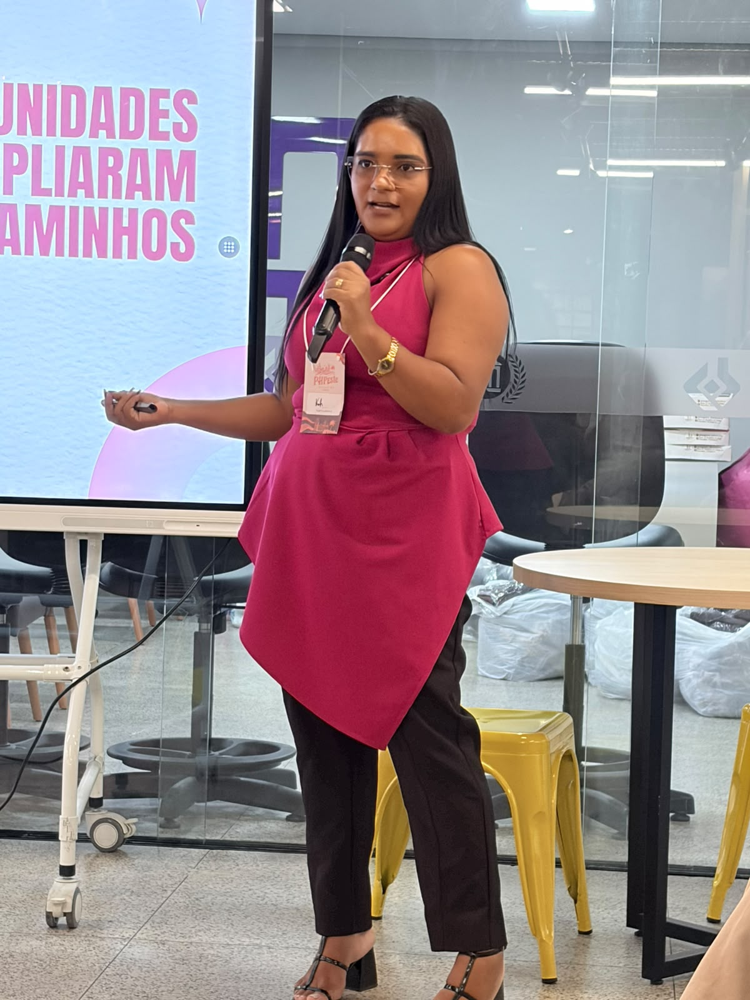

Maria Katriane
Product Manager

Quem sou eu
Product Manager
Pós-graduanda em Gestão de Produtos Digitais, com experiência em gestão de projetos, planejamento estratégico e inovação.
Representante estadual da PHPWomen Brasil no Piauí e uma das lideranças responsáveis pelo fortalecimento das comunidades PHP PI e PHPWomen PI. Coorganizadora do Sertão Tech, evento que conecta pessoas, tecnologia e oportunidades no interior do Piauí.
Atua no incentivo à diversidade, inclusão e protagonismo feminino na tecnologia, acreditando no poder das comunidades para transformar trajetórias e abrir caminhos.
Antes da carreira, sou mãe do Kauan, Ravi, Gabriel e Miguel e esposa do Bruno Oliveira. ♡
A pergunta que guia tudo
Toda boa jornada de produto começa antes do código.
Uma intuição sobre algo que poderia existir. Ainda é só hipótese.
A forma específica de resolver um problema identificado.
A solução entregue, usada e sustentada por pessoas reais.
Ou é uma suposição minha?
Com que frequência, e quanto isso dói?
Aqui entra a descoberta de produto — Product Discovery.
Quem são as pessoas? Quais grupos têm a dor mais intensa e mais disposição a pagar?
Construídas a partir de conversas e dados — sem depender apenas de suposições.
Para provocar
É a promessa clara do valor que entregamos, para quem, e por que isso é melhor do que as alternativas que a pessoa já tem.
O momento em que um produto atende a uma necessidade relevante de um mercado de maneira consistente.
Clientes que continuam utilizando o produto.
Voltam sem precisar ser lembrados.
Indicam sem ganhar nada em troca.
O valor percebido supera o preço.
O mercado vem até você.
Menos churn, mais permanência.
Importante
Olhe o conjunto, ao longo do tempo.
MVP — Produto Mínimo Viável
Significa encontrar a menor forma de testar uma hipótese relevante e gerar aprendizado.
As pessoas conseguem usar? Entendem? Resolve o problema?
→ Usabilidade, protótipos, testes
Pagam? Voltam? Dá para adquirir, entregar e sustentar com lucro?
→ Receita, retenção, custo, escala
Oito armadilhas em que quase todo time já caiu.
Para levar na cabeça
Apaixone-se pelo problema que você está tentando resolver.
Desenvolver e lançar funcionalidades não significa que você está melhorando o produto.
Um produto precisa ser observado, medido, validado e evoluído continuamente.
“
Estamos construindo um produto que as pessoas realmente precisam,
querem usar e estão dispostas a pagar para ter?
Maria Katriane
Product Manager